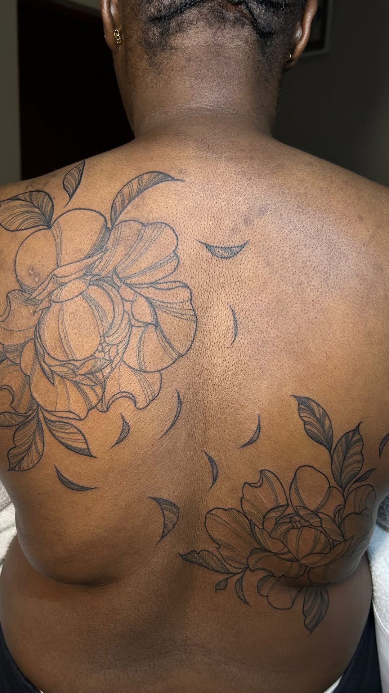
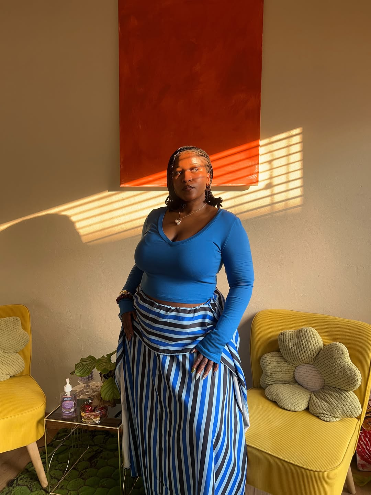
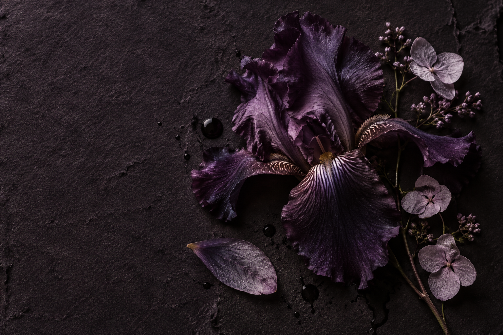

PRIVATE STUDIO · JOHANNESBURG
Gentle art.
Deeply
personal.
Botanical, fine-line & ornamental tattoos.
For healing, beauty and a little self-care.

A little bloom. A lasting feeling.01 / THE WORK
On skin.
From the heart.
Soft lines, living shapes.
A few pieces from the studio.

THE ARTIST, IN HER ELEMENT.02 / THE STUDIO
A softer place
to leave your
mark.
Sahmoo is a Black female tattoo artist creating botanical, fine-line and ornamental pieces in a private Johannesburg studio.
Her work brings together delicate detail and personal expression. A flower, a memory, a little piece of who you are—made permanent.
03 / THE SUMMER EDIT
Make this summer
permanent.
15 OCTOBER – 30 DECEMBER 2026
A little something for you.
Or a few little things to share with someone you love.

Choose a special to start your booking.
The finer details
Black & grey. Colour is R250 extra per colour; additional size is R100 per cm. Micro tattoo packages (3, 7 and 10 cm) can be shared with a friend or loved one. Half- and full-day sessions cannot be split. Full-day designs must be 30 cm or less. A 50% deposit secures your appointment. Availability is confirmed by the studio.
See the original special04 / YOUR NEXT PIECE
It starts with
an idea.
Choose your summer session, pick an available time and tell me about the piece you have in mind.
Book your appointmentYour booking, made simple.
Reserve your time with a 50% deposit and upload your proof of payment. The studio reviews your payment before confirming your appointment.
Trying out the website? The checkout currently uses demo banking details. Please don’t transfer real money.
Have a custom idea? Let’s chatA FEW THINGS TO KNOW
Where is the studio?
Sahmoo works from a private studio in Johannesburg. Ask for the studio address and directions when arranging your appointment.
Can I bring a friend for the summer special?
Yes. The micro tattoo packages in the summer special can be shared with a friend or loved one. Half- and full-day sessions cannot be split.
How do I pay?
A 50% deposit secures your appointment. Choose your session and time in the booking checkout, then upload your proof of payment. The studio confirms your booking after reviewing it. Banking details are currently demo placeholders—do not transfer real money.